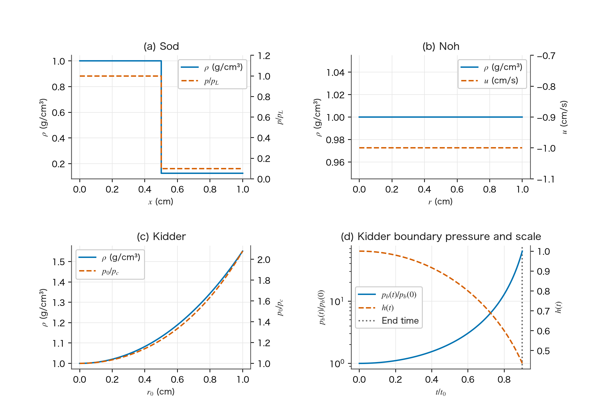
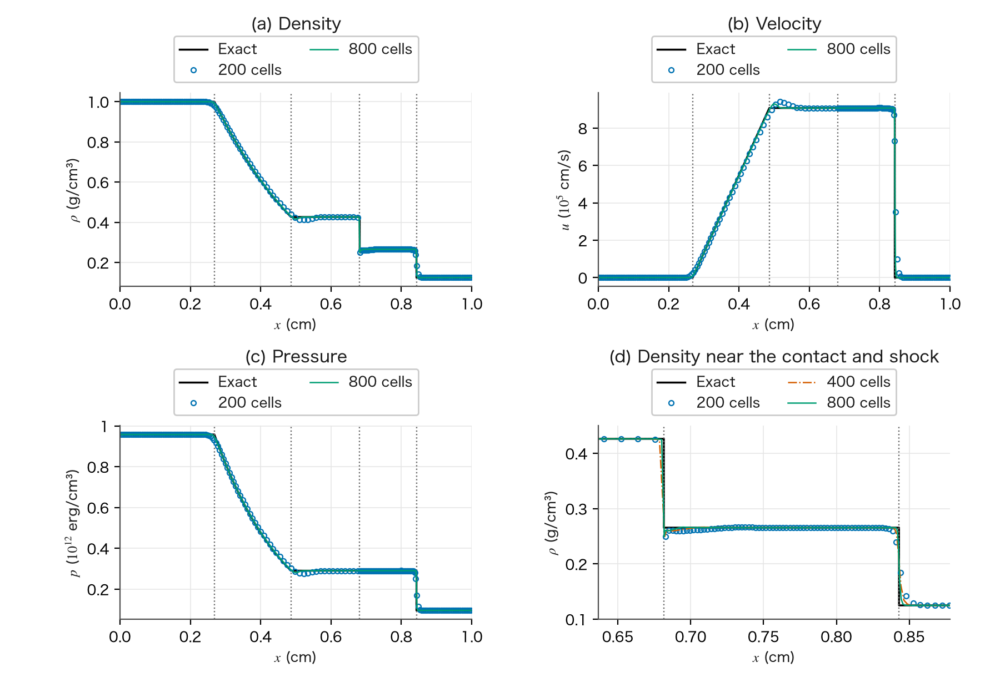
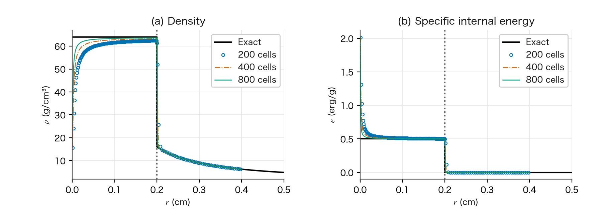
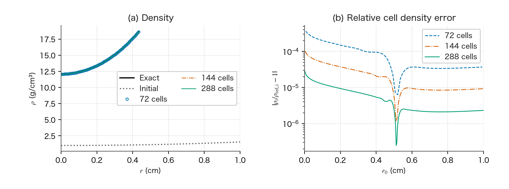
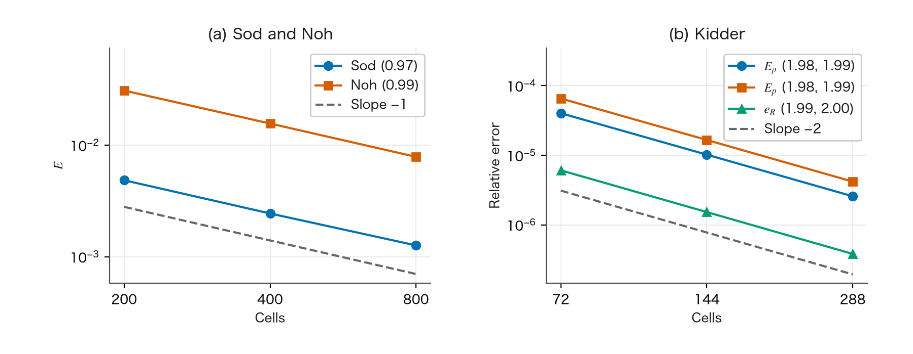
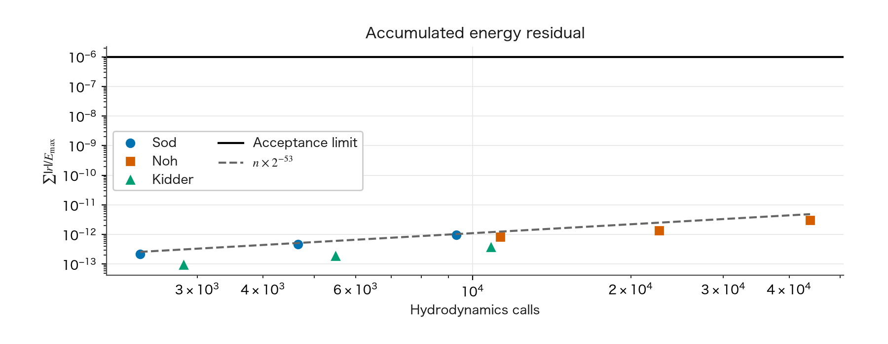

1D Hydrodynamics Verification with Standard Problemsreference
Abstract
We compared 1D Lagrangian hydrodynamics on a staggered grid with exact ideal-gas solutions. The runs used RK2-Average time integration and CSW98 (Caramana–Shashkov–Whalen 1998) limited Kuropatenko artificial viscosity, with conduction, radiation, and laser physics disabled. The planar Sod shock tube and spherical Noh implosion each used 200, 400, and 800 cells. Kidder’s isentropic compression of a sphere used 72, 144, and 288 cells. The observed orders were 0.97 for Sod (minimum 0.90), 0.99 for Noh (minimum 0.77), and 1.98–2.00 for Kidder density, pressure, and outer radius (minimum 1.7). In every run, each cell’s mass was bitwise unchanged, and the accumulated absolute energy residual was at most 3.1 × 10−12 of the largest total energy (limit 10−6).
Introduction
The Sod problem tests the planar three-wave structure of a rarefaction fan, a contact discontinuity, and a weak shock. In the spherical Noh problem, inward flow stagnates at the center and produces an infinitely strong shock that travels outward. Gas behind the shock is at rest, and a wall-heating error appears near the center [1]. In the Kidder problem, a time-dependent boundary pressure drives shock-free spherical compression [2]. The smooth solution tests second-order convergence under joint refinement of space and time, spherical geometric terms, and boundary pressure work.
The runs used one NVIDIA GeForce RTX 4090 on November 21, 2026. The GPU was otherwise idle, and NVIDIA Multi-Process Service (MPS) was disabled. Wall times ranged from 2.4 to 20.2 s, and all runs met the criteria. The repository’s tools/site_figures/ records the run conditions and how the data were extracted.
Setup
All initial meshes are uniform. Figure A shows the initial states and the time dependence of the Kidder boundary pressure.
| Problem | Domain and initial state | Boundary and end time |
|---|---|---|
| Sod | Planar, 0–1 cm, with the diaphragm at 0.5 cm. Densities are 1 on the left and 0.125 g/cm³ on the right. Temperatures are 1 on the left and 0.8 eV on the right. The gas starts at rest. The specific heat ratio is 1.4, the mass number is 1, and the ionization is 0. | Both ends reflect. End time 2 × 10−7 s. The Courant–Friedrichs–Lewy (CFL) number is 0.3. |
| Noh | Spherical, radius 0–1 cm. Density 1 g/cm³, radial velocity −1 cm/s (inward) away from the fixed center node, and specific heat ratio 5/3. The test sets the initial internal energy to exactly zero. | Free outer boundary with the compatible energy update enabled (compatible_energy=True). End time 0.6 s. |
| Kidder | Spherical, initial radius 0–1 cm. Initial velocity zero and specific heat ratio 5/3. The equations below give the initial density and pressure profiles. | Time-dependent pressure at the outer boundary. End time 6.903 × 10−7 s. |
The initial Sod pressures are 9.579 × 1011 on the left and 9.579 × 1010 erg/cm³ on the right. The density ratio of 8 and pressure ratio of 10 match the Sod problem of Mattsson and Rider [3, §5]. The waves remain short of the walls at the end time, and the end cells retain their initial pressures to within a relative difference of 10−12. The infinitely strong spherical Noh shock requires zero initial pressure [5, p. 4].
$$ \begin{aligned} \rho_0(r_0)&=\rho_c(1+\beta r_0^2)^{3/2},& p_0(r_0)&=p_c[\rho_0(r_0)/\rho_c]^{5/3},\\ p_b(t)&=p_c(1+\beta R_0^2)^{5/2}/h(t)^5. \end{aligned} $$For Kidder, \(r_0\) is the initial radius, \(\rho_0\) and \(p_0\) are the initial density and pressure, and \(\rho_c\) and \(p_c\) are their initial central values (1 g/cm³ and 1012 erg/cm³). The coefficient \(\beta\) is 0.34 cm−2, \(R_0\) is the initial outer radius of 1 cm, \(t\) is time, \(p_b\) is the boundary pressure, and \(h(t)\) is the radial scale factor. The runs end at 0.9 times the collapse time \(t_0\), when the scale factor is 0.4359 and the density is 12.07 times its initial value.
The mass of each cell is the volume integral of its initial density evaluated by eight-point Gauss–Legendre quadrature. The numerical calculation and the reference density use the same stored masses. The test checks that every step stays strictly below the 10−8 s cap. Each doubling of the cell count nearly doubles the step count (1,412, 2,745, and 5,417). The mean time step decreases with the cell size, so space and time are refined together.

Exact solutions
The exact Sod Riemann solution consists of a left isentropic rarefaction fan, a contact discontinuity, and a right shock. The states across the shock satisfy the Rankine–Hugoniot jump conditions. Newton iteration finds the intermediate pressure \(p_*\) by matching velocities obtained from the rarefaction and shock branches. Each iteration subtracts the velocity mismatch divided by its pressure derivative from the current pressure. The solver bounds the new pressure below by 10−14 times the initial left pressure. The iteration stops at a relative update of 10−14 or less and uses the last pressure if the 100-iteration cap is reached.
The pressure is 2.90368 × 1011 erg/cm³, the intermediate velocity is 9.07719 × 105 cm/s, and the densities to the left and right of the contact are 0.426319 and 0.265574 g/cm³. At the end time, the fan head, fan tail, contact, and shock are at 0.268392, 0.486244, 0.681544, and 0.842975 cm, respectively.
$$ \begin{aligned} R_s &= |u_0|t/3,\\ (\rho,u,e,p)&= \begin{cases} (64,0,1/2,64/3), & r\lt R_s,\\ ((1+|u_0|t/r)^2,u_0,0,0), & r\gt R_s \end{cases} \quad\text{(cgs)} . \end{aligned} $$In the exact Noh solution [1, p. 104], \(R_s\) is the shock radius, \(u_0\) the initial velocity, \(t\) time, and \(r\) radius. The symbols \(\rho\), \(u\), \(e\), and \(p\) denote density, radial velocity, specific internal energy, and pressure, respectively. The states are in cgs units. The upstream density expression uses an initial density of 1 g/cm³. The initial velocity is −1 cm/s. The shock radius at the end time is 0.2 cm.
Kidder’s exact solution is homologous compression. The radii of all fluid elements shrink in the same proportion, and the density and pressure evolve as follows [2, p. 54, Eqs. (2.2), (2.5), (2.7)].
$$ r=r_0 h(t),\qquad \rho=\rho_0(r_0)/h(t)^3,\qquad p=p_0(r_0)/h(t)^{3\gamma}. $$\(r\) and \(r_0\) are the current and initial radii, \(t\) is time, \(h(t)\) is the radial scale factor, \(\rho\) and \(p\) are the current density and pressure, \(\rho_0\) and \(p_0\) are the initial density and pressure, and \(\gamma\) is the specific heat ratio.
$$ \begin{aligned} h^{3\gamma-2}\ddot h&=-\frac{1}{\rho_0 r_0}\frac{dp_0}{dr_0}=-\frac{1}{t_0^2},\\ \frac{1}{\rho_0 r_0}\frac{dp_0}{dr_0}&=\frac{5\beta p_c}{\rho_c}, \qquad t_0=\sqrt{\frac{\rho_c}{5\beta p_c}}. \end{aligned} $$The first line is Kidder’s equation of motion [2, Eq. (2.8)]. \(h\) is the radial scale factor, \(\ddot h\) its second time derivative, \(\gamma\) the specific heat ratio, \(r_0\) the initial radius, and \(\rho_0\) and \(p_0\) the initial density and pressure. \(dp_0/dr_0\) is the radial derivative of the initial pressure. Substituting the initial profiles gives the second line. The central initial pressure \(p_c\), central initial density \(\rho_c\), and coefficient \(\beta\) give a collapse time \(t_0\) of 7.67 × 10−7 s.
$$ h(t)=\sqrt{1-(t/t_0)^2},\qquad u_b=-\frac{R_0 t}{t_0^2 h(t)}. $$This solution starts from rest with a specific heat ratio of 5/3 [2, Eq. (2.13)]. \(h(t)\) is the radial scale factor at time \(t\), \(t_0\) the collapse time, \(R_0\) the initial outer radius, and \(u_b\) the outer node velocity. At the end time, the exact \(u_b\) is −2,692,093.7 cm/s. The computed velocities, from coarsest to finest mesh, are −2,692,100.8, −2,692,095.5, and −2,692,094.2 cm/s.
Measures and criteria
The Sod and Noh density errors use a volume-weighted relative L1 error.
$$ E=\frac{\sum_i V_i|\rho_i-\bar\rho_i|}{\sum_i V_i\bar\rho_i}. $$\(E\) is the relative error, \(i\) is the cell index, \(V_i\) is the final cell volume, \(\rho_i\) is the computed density, and \(\bar\rho_i\) is the exact density averaged over the cell. For Sod, the integration splits cells at wave locations and integrates the fan analytically. For Noh, it splits cells at the shock radius, integrates the exact density over the cell volume, and divides by that volume.
The Kidder density and pressure errors use the same volume-weighted formula. The references are the density of a homologously compressed cell and its corresponding isentropic pressure. The outer radius is compared with the exact solution by relative error.
$$ \begin{aligned} \rho_{\rm ref,i}&=\frac{m_i}{h^3V_{0,i}}, &p_{\rm ref,i}&=p_c(\rho_{\rm ref,i}/\rho_c)^\gamma,\\ p_i&=(\gamma-1)\rho_i e_i, &e_R&=\frac{|R-hR_0|}{hR_0}. \end{aligned} $$For cell \(i\), \(m_i\) is its stored mass, \(V_{0,i}\) its initial volume, and \(\rho_{\rm ref,i}\) and \(p_{\rm ref,i}\) its reference density and pressure. \(p_i\), \(\rho_i\), and \(e_i\) are the computed cell pressure, density, and specific internal energy. \(p_c\) and \(\rho_c\) are the initial central pressure and density, \(\gamma\) the specific heat ratio, and \(h\) the final radial scale factor. \(R\) is the computed outer radius, \(R_0\) the initial outer radius, and \(e_R\) the outer-radius relative error. The relative errors of density and pressure are \(E_\rho\) and \(E_p\), respectively.
$$ q_{\rm shock}=\frac{\ln(E_{200}/E_{800})}{\ln 4},\qquad q_{\rm Kidder}=\log_2(E_{\rm coarse}/E_{\rm fine}). $$\(q_{\rm shock}\) is the observed order for Sod or Noh, and \(E_{200}\) and \(E_{800}\) are their density errors at 200 and 800 cells. \(q_{\rm Kidder}\) is the order for an adjacent pair of Kidder meshes. \(E_{\rm coarse}\) and \(E_{\rm fine}\) are the coarse- and fine-mesh errors for the same quantity, whether density, pressure, or outer radius.
Discontinuities often reduce the observed convergence order to one or below, even for methods of higher formal order [4, §8.3.3.4]. The Sod minimum of 0.90 is 10% below first order, using the agreement band for observed and formal orders in the grid convergence index procedure as a guide [4, §8.6.2, Table 8.1]. The spherical Noh minimum is 0.77. Burnett et al. [5, Table 3, Eq. (65)] report L1 orders for Los Alamos National Laboratory’s FLAG code of 0.900 for the ideal gas and 0.771–1.045 for Noble–Abel gases. The Kidder minimum is 1.7. Burton et al. [6, Table 3 and the Kidder ball section] report orders of 1.75–2.86 for the radii of the isentropic shell and L1 density and pressure orders for the ball of 1.89–1.92 with one scheme and 1.11–1.19 with another. The criteria specify lower bounds, so observed orders above the formal order pass.
Every run must reach the prescribed end time, preserve each cell’s mass bit for bit, and meet the energy conservation criterion. The tests also require exactly zero initial internal energy for Noh and a fixed center node for Noh and Kidder.
Results
| Problem | Cells | Steps | Error | Order | Minimum order | Energy residual ratio | Wall time (s) |
|---|---|---|---|---|---|---|---|
| Sod | 200 | 1,167 | 0.004851 | — | 0.90 | 2.19 × 10−13 | 2.39 |
| Sod | 400 | 2,328 | 0.002442 | — | 0.90 | 4.61 × 10−13 | 3.20 |
| Sod | 800 | 4,655 | 0.001264 | 0.97 | 0.90 | 9.64 × 10−13 | 5.33 |
| Noh | 200 | 5,650 | 0.03088 | — | 0.77 | 8.41 × 10−13 | 6.10 |
| Noh | 400 | 11,322 | 0.01563 | — | 0.77 | 1.35 × 10−12 | 10.75 |
| Noh | 800 | 21,919 | 0.007860 | 0.99 | 0.77 | 3.05 × 10−12 | 20.17 |
| Kidder | 72 | 1,412 | 4.008 / 6.528 / 0.6061 | — | 1.7 | 9.49 × 10−14 | 2.39 |
| Kidder | 144 | 2,745 | 1.017 / 1.655 / 0.1523 | 1.98 / 1.98 / 1.99 | 1.7 | 1.90 × 10−13 | 3.62 |
| Kidder | 288 | 5,417 | 0.2568 / 0.4174 / 0.03814 | 1.99 / 1.99 / 2.00 | 1.7 | 3.79 × 10−13 | 6.34 |
In Figure B, the Sod contact and shock span several cells. The transition widths decrease as the cells become finer.

Behind the Noh shock, the median density in the radial interval \(0.1\,\mathrm{cm} \lt r \lt 0.18\,\mathrm{cm}\) approaches the exact 64 g/cm³. It is 62.13, 63.06, and 63.53 g/cm³ at 200, 400, and 800 cells, respectively (Figure C). The cell adjacent to the center has a density of 15.68–15.78 g/cm³ and a specific internal energy of 2.01–2.02 erg/g. The exact values are 64 g/cm³ and 0.5 erg/g, respectively, so the region near the center shows excess heating and a density deficit.
Noh [1, p. 88] shows that artificial viscosity can cause wall heating when it spreads the shock over a finite width. In spherical geometry, the excess heating near the origin can reach 1000% and depends on the form of the artificial viscosity [1, p. 104]. The contiguous region from the center where density differs from 64 g/cm³ by more than 10% spans 23, 22, and 21 cells at 200, 400, and 800 cells, respectively. Its outer radii are 0.03024, 0.01447, and 0.006917 cm. The region shrinks with cell size and is included in the density error norm.

The Kidder flow compresses smoothly and reaches densities of approximately 12.1–18.7 g/cm³ at the end time (Figure D).

The exact Kidder velocity is proportional to radius. Neighboring cells have equal velocity gradients, so the computed gradient ratios in the limiter formula are close to one. The limiter is then close to one and the artificial viscous stress is small.
$$ r_l\simeq 1,\qquad r_r\simeq 1,\qquad \psi\simeq 1,\qquad Q=\rho W(1-\psi)|\Delta u|\simeq 0. $$\(r_l\) and \(r_r\) are the inner and outer neighbors’ velocity gradients divided by the gradient of the cell in question. \(\psi\) is the limiter, \(Q\) is the artificial viscous stress, \(\rho\) is density, \(W\) is the Kuropatenko wave speed, and \(\Delta u\) is the velocity difference between the cell’s nodes.
Convergence
Figure E shows the relative errors against the cell count. The observed orders of the Sod and Noh shock problems are close to one. For the smooth Kidder problem, each of the three errors drops by nearly a factor of four when the cell count doubles.

Mass and energy conservation
The mass of every Lagrangian cell was bitwise unchanged in all runs. Operator splitting calls hydrodynamics twice per time step, once for each half step. The history file distinguishes the calls as hydro_strang_first and hydro_strang_second. The test computes the energy residual for each call and sums its absolute value over all calls.
\(r\) is the residual of one call, \(E_{\rm before}\) and \(E_{\rm after}\) are the total energies before and after it (kinetic plus internal), \(\Delta E_{\rm ext}\) is the net external energy input to the hydrodynamic update, and \(E_{\max}\) is the largest total energy among the values before and after each hydrodynamics call. The sum includes every hydrodynamics call in the run.
External contributions in 1D include boundary pressure work, work at velocity-constrained nodes, energy added by floors, and radiation pressure work. Only the Kidder boundary pressure work contributes in these runs, and the energy added by floors is zero in every run.
The Kidder total energy increases from 1.010 × 1013 erg initially to 6.577 × 1013 erg. The accumulated boundary pressure work of 5.568 × 1013 erg accounts for the increase. All three meshes agree to four significant digits for these values. Sod and Noh have zero cumulative external input and constant total energies of 1.3171 × 1012 erg/cm² and 2.0944 erg, respectively. The Noh energy is the kinetic energy of a 1 cm sphere with a uniform inward speed of 1 cm/s (about 2π/3 erg), minus the contribution the fixed center node would carry if it moved.
The measured residual ratios range from 9.5 × 10−14 to 3.1 × 10−12, or about 10−16 per call, at the level of double-precision rounding (Figure F). The limit of 10−6 is 50 times below the smallest estimated defect that mismatched force and work would leave in these runs (5 × 10−5 \(E_{\max}\)), and more than 100 times above the estimated accumulated rounding error (8 × 10−9 \(E_{\max}\) or less). Both are analytical estimates from the run conditions and were not measured.

Limitations
- The scope is 1D ideal-gas hydrodynamics. Electron–ion energy exchange, conduction, radiation, and laser physics are outside that scope.
- All initial meshes are uniform. The Sod waves remain short of the walls, leaving wall reflection untested.
- The Noh wall-heating region contributes to the global density error. Wall heating itself has no separate criterion.
- Kidder velocity is proportional to radius. The action of artificial viscosity in smooth flows with nonuniform velocity gradients remains untested.
- The runs used one GPU model.
Running the tests
Run one of the following commands from the repository root to use a single mesh. The matching environment variable selects the cell count. If omitted, the deck defaults are 200, 400, and 72, respectively. Setting TENRYU_HYDRO_ORDER_HISTORY to an output directory writes per-call energy records into a history file under that directory.
TENRYU_SOD_DIAG_NR=200 ./build/tenryu verify sod_planar
TENRYU_NOH_DIAG_NR=400 ./build/tenryu verify noh
TENRYU_KIDDER_DIAG_NR=72 ./build/tenryu verify kidderTwo Catch2 programs in tests/verification/ cover Sod and Noh in one program and Kidder in the other. They run each problem at three mesh sizes through tenryu verify and check convergence orders, cell masses, the center node in spherical geometry, and energy residuals. The cases carry the hidden tag [.expensive], so an unfiltered run of either program skips them. After the programs are built, CTest registers the cases under the expensive label shared by other long tests and runs them serially with a 3600 s timeout per case.
References
- W. F. Noh, “Errors for calculations of strong shocks using an artificial viscosity and an artificial heat flux,” J. Comput. Phys. 72, 78–120 (1987). doi:10.1016/0021-9991(87)90074-X
- R. E. Kidder, “Theory of homogeneous isentropic compression and its application to laser fusion,” Nucl. Fusion 14, 53–60 (1974). doi:10.1088/0029-5515/14/1/008
- A. E. Mattsson and W. J. Rider, “Artificial viscosity: back to the basics,” Int. J. Numer. Methods Fluids 77, 400–417 (2015). doi:10.1002/fld.3981
- W. L. Oberkampf and C. J. Roy, Verification and Validation in Scientific Computing (Cambridge University Press, 2010). doi:10.1017/CBO9780511760396
- S. C. Burnett, K. G. Honnell, S. D. Ramsey, and R. L. Singleton Jr., “Verification Studies for the Noh Problem Using Nonideal Equations of State and Finite Strength Shocks,” J. Verif. Valid. Uncert. Quantif. 3, 021002 (2018). doi:10.1115/1.4041195
- D. E. Burton, N. R. Morgan, T. C. Carney, and M. A. Kenamond, “Reduction of dissipation in Lagrange cell-centered hydrodynamics (CCH) through corner gradient reconstruction (CGR),” J. Comput. Phys. 299, 229–280 (2015). doi:10.1016/j.jcp.2015.06.041